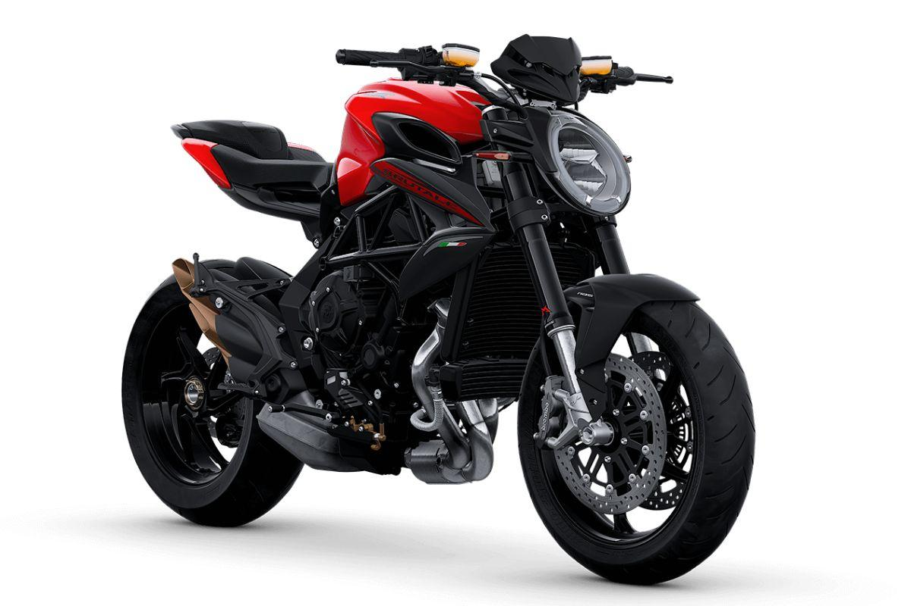

La MV Agusta Brutale 800 RR es una de las motos más populares de la firma y ha sido actualizada con un nuevo conjunto de motor, chasis y electrónica. La idea, dice MV, es mantener las cosas tan divertidas y animadas como ahora, pero hacer que sea un poco más fácil vivir con ellas. Suena bien para nosotros.

MV AGUSTA RIVALE 800
Es una pieza de diseño con clase, todas las curvas que fluyen y detalles finos, rematada con la firma de tres cilindros de MV de un trío de silenciadores rechonchos. También es en gran medida un modelo de nicho. Incluso después de montar la Rivale, todavía no estoy seguro de qué tipo de bicicleta es exactamente o qué bicicletas son las rivales implícitas en su nombre.